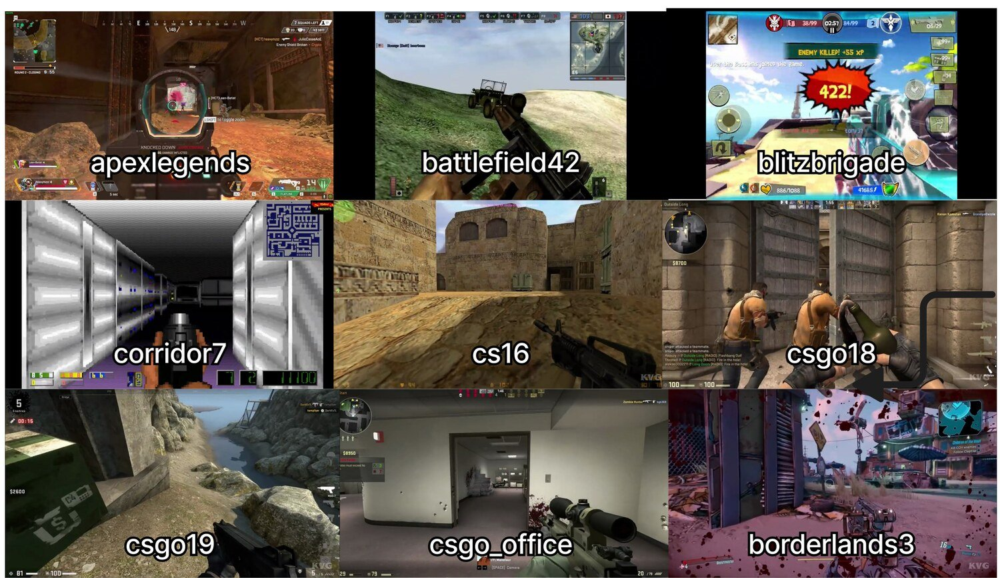
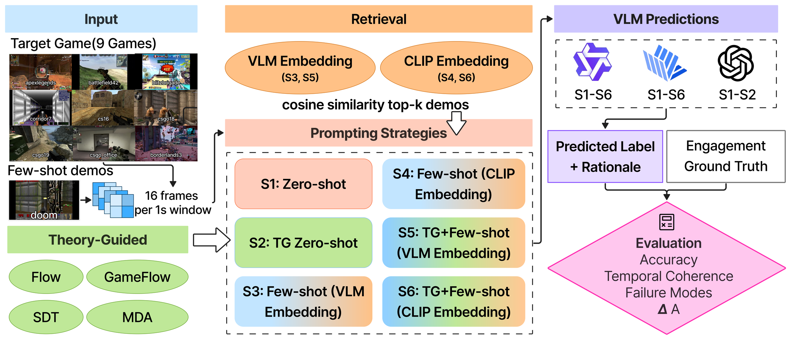
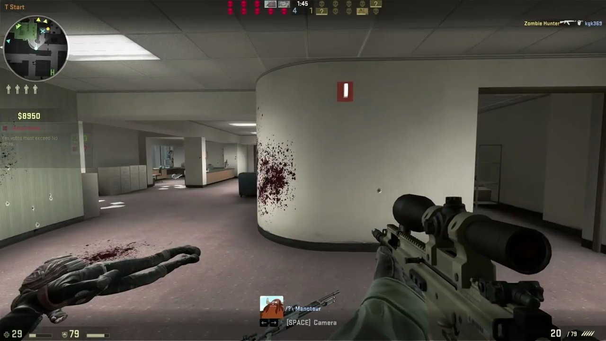
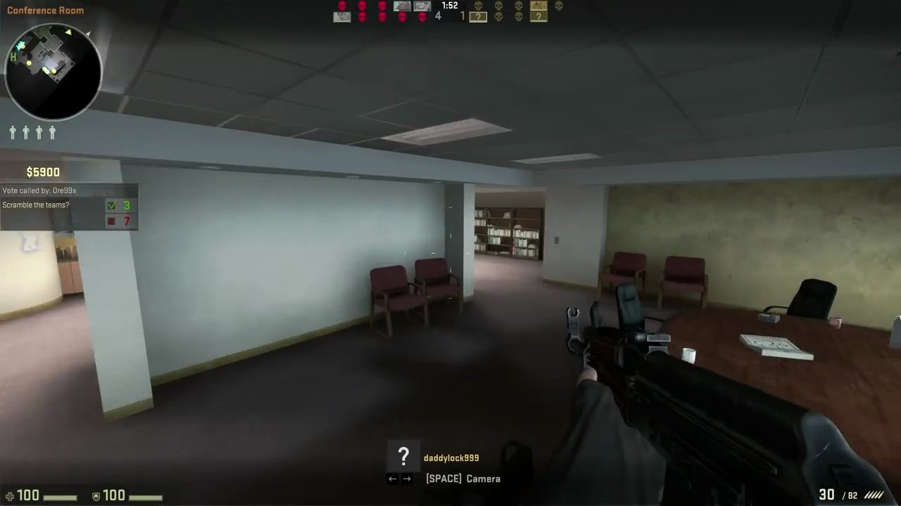

Key findings
Seeing the game is not understanding the player
InternVL, Qwen and GPT-4o all land near 57%, below the 67.2% majority-class baseline that never looks at the video.
Concrete examples lift both open models above the baseline. Theory-guided prompting alone drops accuracy to about 53%.
Whether engagement goes up or down stays near chance (50%) and the 56.5% baseline for every model and strategy.
Abstract
Inferring human engagement from gameplay video is important for game design and player-experience research, yet it remains unclear whether vision–language models (VLMs) can infer such latent psychological states from visual cues alone. Using the GameVibe Few-Shot dataset across nine first-person shooter games, we evaluate three VLMs under six prompting strategies. We consider both pointwise engagement prediction and pairwise prediction of engagement change between consecutive windows. Results show that zero-shot VLM predictions are generally weak and often fail to outperform per-game majority-class baselines. Memory- or retrieval-augmented prompting improves pointwise prediction in some settings, whereas pairwise prediction remains consistently difficult across strategies. Theory-guided prompting alone does not reliably help and can instead reinforce surface-level shortcuts. These findings suggest a perception–understanding gap in current VLMs: although they can recognize visible gameplay cues, they struggle to robustly infer human engagement across games.
Setup
Nine shooter games, labeled every second

- 9first-person shooter games with very different visual styles
- 59one-second windows per game, 16 frames each, after a one-second shift for human reaction lag
- 5trained observers per clip, aggregated into a High or Low engagement label
- 3VLMs, no fine-tuning: InternVL3.5-8B-Instruct and Qwen3-VL-8B-Instruct (all six strategies), GPT-4o (S1 and S2)
Pointwise
One window, one label.
Pairwise
Two consecutive windows, one direction. Near-stable pairs are excluded.
Baseline. Always guess the game’s most common label. It needs no video, and it is surprisingly hard to beat.

| ID | Strategy | Theory-guided prompt | Retrieved examples |
|---|---|---|---|
| S1 | Zero-shot | no | no |
| S2 | Theory-guided zero-shot | yes | no |
| S3 | Few-shot, VLM retrieval | no | VLM embedding |
| S4 | Few-shot, CLIP retrieval | no | CLIP embedding |
| S5 | Theory-guided few-shot, VLM retrieval | yes | VLM embedding |
| S6 | Theory-guided few-shot, CLIP retrieval | yes | CLIP embedding |
Theory-guided prompts. Four classic engagement frameworks are turned into cues a model can actually see on screen.
SDT = Self-Determination Theory; MDA = Mechanics–Dynamics–Aesthetics. Full prompts are in the paper’s appendix and in the code repository.
Results
Examples help. Theory alone does not.
S3 and S5 are evaluated on a held-out split of about 18 windows per game and retrieve from an in-game, error-driven case base, so they read as memory-based corrective adaptation rather than strict held-out generalization. All other strategies use all 59 windows. Per-game numbers and 95% bootstrap confidence intervals are in the paper.
| Model | S1 | S2 | S3 | S4 | S5 | S6 |
|---|---|---|---|---|---|---|
| InternVL3.5-8B | 56.9 | 52.9 | 71.3 | 56.9 | 68.3 | 51.4 |
| Qwen3-VL-8B | 56.7 | 53.1 | 75.0 | 67.8 | 74.1 | 69.7 |
| GPT-4o | 56.6 | 56.6 | n/a | n/a | n/a | n/a |
| Model | S1 | S2 | S3 | S4 | S5 | S6 |
|---|---|---|---|---|---|---|
| InternVL3.5-8B | 53.1 | 49.8 | 51.8 | 53.1 | 55.9 | 49.8 |
| Qwen3-VL-8B | 54.7 | 54.0 | 47.7 | 52.1 | 58.8 | 54.9 |
| GPT-4o | 51.9 | 54.6 | n/a | n/a | n/a | n/a |
Bold marks accuracy above the majority-class baseline. GPT-4o was evaluated on S1 and S2 only.
Consistency
Models agree on the wrong answers
The two open models agree substantially (κ = 0.67), but agreement is not correctness: on CSGO18 they give the same answer on 86.4% of windows, and both stay below the majority baseline.
Label balance
Balance the memory
With no High examples in the retrieval memory, the model says Low everywhere. Adding 17 high-engagement cases lifts Blitz Brigade from 62.7% to 78.2%; with 50, Borderlands 3 climbs from 51.4% to 84.2%.
Analysis · real rationales from the theory-guided prompt
Why do VLMs miss?

“Active combat with visible feedback … indicating engagement.”

“A vote is occurring, indicating a pause … suggesting low engagement.”
Five failure modes
- Visual intensity biasPredictions follow how intense the frame looks (r = 0.43); human labels do not (r = −0.19).
- Surface shortcutsTeammates or blood on screen push the model to “High”.
- Context blindnessMenus, votes and scoreboards read as “no gameplay”, so the model says “Low”.
- Temporal inconsistencyPredictions flip 18× more often than human labels between adjacent seconds.
- Confident but wrong38.5% accuracy when the model sounds confident, 64.3% when it hedges.
Takeaway
A perception–understanding gap
- Perceptionwhat is on screen
- Descriptionsaying it fluently
- Interpretationwhat it means in the game
- Inferencehow the player feels
Today’s VLMs recognize visible gameplay cues and talk about them fluently, but they struggle to infer what those cues mean for the person playing.
- Test inference, not just perception. Games are a diagnostic testbed for affective understanding.
- Concrete examples beat elaborate prompts for subjective tasks.
- Add temporal memory and calibrated confidence before trusting VLMs as judges of subjective content.
Citation
BibTeX
@inproceedings{wang2026engagement,
title = {Do Vision--Language Models Understand Human Engagement in Games?},
author = {Wang, Ziyi and Guo, Qizan and Singh, Rishitosh Kumar and Hu, Xiyang},
booktitle = {Proceedings of the 2026 Conference on Empirical Methods in Natural Language Processing (EMNLP)},
year = {2026}
}